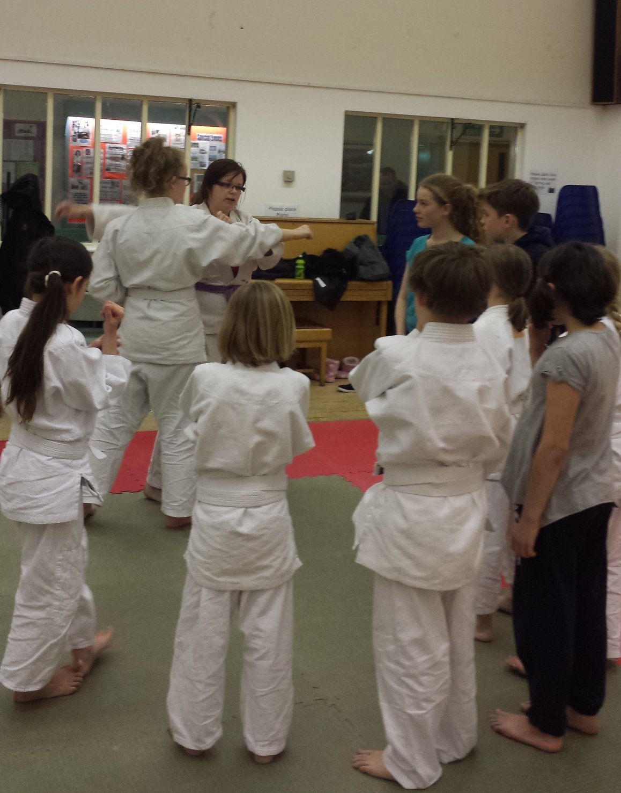
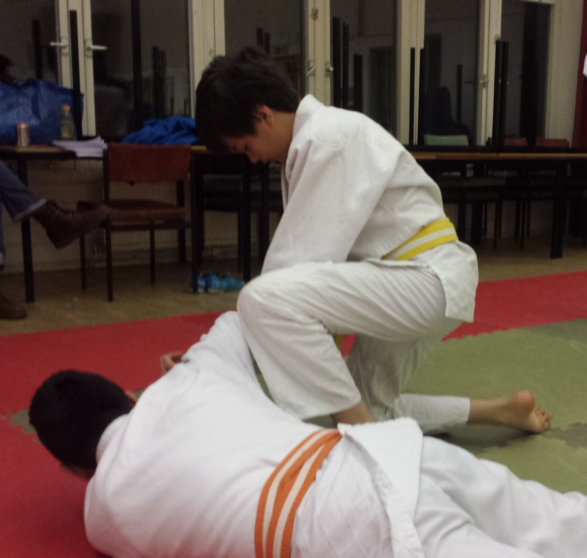

Instructors
Sensei Sean Adjei is the current club Instructor. Other Sensei often run special sessions.

At Highbury Jitsu Club we teach Jujitsu and practical self defence suitable for anyone; any size, weight or strength. We are based in Highbury, Islington where we offer martial arts classes for juniors ages 8-17 and adults 18+
Highbury Jitsu Club was founded in 2005 after 4 years at the Roundhouse we have now relocated to Sotheby Mews Day Centre.
Most students at Highbury joined the club without martial arts experience, and come from a variety of different backgrounds. There is a good mixture of male and female students, and a wide age range from fifteen to forty something.
We are a not for profit and volunteer run club.
Sensei Sean Adjei is the current club Instructor. Other Sensei often run special sessions.
We are part of the Jiu Jitsu Foundation but teach and use techniques from other styles; Brazilian Jiu-Jitsu, Judo and Self Defence.
Jitsu is derived from the feudal Japanese art of Jiu-Jitsu (also known as Ju Jutsu). It is a practical and modern self-defense based martial art, incorporating joint locks, strikes and throws to deal with almost any attack imaginable. With a heavy emphasis on using an opponent's size and momentum against them, Jitsu is suitable for anyone; irrespective of age, strength, weight or gender. A history of our style can be found here.
Jitsu teaches moderated responses. An unjustified and unwanted grab does not warrant the same response as a knife wielding mugger.
Jiu-Jitsu incorporates many types of techniques. Techniques are taught at the level appropriate to the grade of the student.
As students become more experienced they can progress to a higher belts by attending a grading. Gradings are held every 3 months and Sensei will announce details of the next one and tell you when you are ready to take it. Each Grading is overseen by a Sandan, usually from outside the Region, to promote impartiality.
The general requirements for grading are:
Lower Grades
7th Kyu Yellow belt: Basic safety and breakfalling. Moving out the way of attacks. Some strikes, wrist and arm locks. Dealing with grabs. Defence from a bottle (plastic). Four throws from basic attacks.
6th Kyu Orange belt: More complicated breakfalling. Four more throws. Groundholds. More armlocks and grabs. Defence from a cosh (small stick).
5th Kyu Green belt: Seven more throws. Ground restraints and more groundholds. More wristlocks, basic defences using wrist locks and armlocks against a knife (rubber). Defences from a broken bottle (plastic).
Senior Grades
4th Kyu Purple belt: Advanced breakfalling. Ten new throws. Groundfighting. Counters to wristlocks. Defence against chains, bokken (wooden sword) and multiple unarmed attackers. Candidate must have passed the Assistant Instructor qualification.
3rd Kyu Light Blue belt: Very advanced breakfalling. Nine new throws. Nage No Kata Phase 1 (formalised throwing). Groundfighting, including strangles and full knowledge of groundholds. Defences on the ground. Defences from metal weapons and multiple armed attackers. Candidate must have held a Purple belt for at least 6 months and passed the Instructor qualification.
2nd Kyu Dark Blue Belt: Nine new throws. Leglocks. Groundfighting with leglocks. Defences using a cosh. Defences from a baseball bat and multiple randomly armed attackers. Candidate must have held a Light Blue belt for at least 6 months and have a basic knowledge of First Aid.
Instructor Grades
1st Kyu Brown Belt: Extreme breakfalling. Seven additional throws. Advanced groundfighting and full knowledge of TJJF Judo rules. Defence against any standard weapon, including knuckledusters, chairs and metal knives. Defence against Boxer attacker. Students must have held a Dark Blue belt for at least 6 months, hold a valid First Aid certification and passed the Club Instructor qualification. Brown belts are fully qualified to teach their own Club, at which point they are an Acting Primary Trainer (Shodan-ho) and are entitled to wear Hakama.
Black Belts are the next grades
So, what can you expect when you first walk through the door?
First of all, say hello! If you look slightly lost, chances are that someone will ask if they can help you. If people are already changed, look for a person wearing big black trousers, or any Brown or Black belt. Jitsu clubs are full of friendly people and we were all beginners once. We do not have terms so turn up at any session.
Before you can get on the mat, there is some paperwork we need to do. This only takes a few minutes to fill in. (Pre-empt the Sensei by downloading the form here). If you are under 18 you will need your parents permission. You should have loose comfortable clothing, a t-shirt and jogging bottoms are ideal. You also need to remove or cover piercings, jewellery, watches, necklaces. We train barefoot.
Once the mats are down and everyone is changed, a senior grade or the Sensei will start the warm-up. This does exactly what is says on the tin; warm you up. As with all physical activity, warm muscles and mobile joints work much better in Jitsu. The motions and exercises of the warm up make sure that we are prepared for the session.
There may also be a few traditional exercises like press-ups or sit-ups. If one of the reasons you are at Jitsu is to improve your fitness, don't worry! Just do what you are capable of and let the others do their thing. We know that 10 press-ups can be an achievement in itself. It's better to do 3 good ones rather than 10 rubbish ones.
After the warm-up, we line up and rei. This is a formal greeting to begin the session properly. If it's your first time, you'll be at the end of the mat nearest the door. Just follow what the others do as you kneel down. The grade at the head of the line will command "Sensei, ni-rei!" and you bow to the Sensei. Sensei bows back.
At this point there is usually some falling practice and instruction. Jitsu involves lots of being thrown on the floor, so it's important that we know how to land safely. Although the essence is simple, this needs quite a bit of practice to become really proficient. For your first session, either the Sensei or one of the senior grades will take you to one side, along with any other novices, to teach you the basics.
For the rest of the session, the format is generally that the Sensei will demonstrate a technique and then people practice in pairs. It will often be broken down into steps; where to move, how to position, how to apply.
You may be asked show the rest of the class what you have just been doing during the session. Enjoy this and show off!
At the end of the session there is a warm-down, to stretch the muscles we have been using and reduce any stiffness in the morning. (After your first session, a warm bath at home is probably a good idea.) After this we line up again and rei to formally close the session. Then put the mats away, get changed and go to the Pub.
At first wear comfortable loose fitting clothing, after a few sessions you will be expected to get a Gi.
We train at Sotheby Mews Day Centre
The Club is a short walk from Arsenal Tube or take the 4, 19 or 236 bus from Finsbury Park to Riversdale Road. From Highbury & Islington Tube take the bus 4 or 19 to St Joan of Arc School. Walk down and turn right onto Sotheby Rd.
Arrive 10 minutes early to get changed, complete paper work and ask any questions. Sessions start promptly at 6:00 for juniors and 7:30 for adults.
Your first Session is Free!
If you are under 18 you will need your parent or guardians permission before training.
Looking for an activity that is fun, physical and rewarding?
Open to young people from the ages of 8 to 17, Highbury Juniors Jitsu Club teaches in a safe setting suitable for anyone; any size, weight or strength. As well as being fun and challenging, it improves balance, coordination and general physical condition.
Junior Jitsu is almost identical to the system that the adults learn and is taken just as seriously, although in a fun manner.
Please Note: Due to the Juniors Club being effectively at full capacity please Contact us beforehand to confirm if spaces are available.
Your first Session is Free! After that as a Junior it is £15 per month.


Wear loose fitting clothing and you will need your parents permission. For more information see our First Session page.
8 to 17 are welcome to train.

Beginners are always welcome and the first session is free. Just turn up in loose clothing, or contact us if you have any questions not covered here. Additional information on Junior Jitsu is available from the Foundation website. Please note that a parent or guardian must sign the membership form before a junior can train.
Jitsu is great fun! As well as being great exercise and a lot of fun, Jitsu develops many skills and talents that are just as useful off the mat as on it.
There are the obvious physical benefits: fitness, balance, coordination and an excellent understanding of the body and its capabilities and limitations. But it doesn't stop there. Jitsu also teaches discipline, respect, consideration and confidence.
As a Jitsuka (student) develops and progresses in the Art, they will also have responsibility for teaching others (under supervision). This grows their social skills and an understanding of the limitations of the Jitsuka and those around them. Teaching will help them to understand their own Jitsu better and give them an appreciation of the differences between their own viewpoint and that of those they are with.
It should also be mentioned that Jitsu, like football, rugby, hockey etc., is a full-contact, physical activity. As mentioned on the membership form, this does have certain risks. Jitsuka do get hit occasionally, and they will get bruises, the odd fat lip and maybe a bloody nose or black eye. It happens to the best of us. However, serious injuries are rare in Jitsu. All Sensei are qualified first-aiders and we always train in the safest way possible.
All Junior Jitsu Sensei are DBS cleared and constantly have both their own progress and that of the Club monitored by a mentor. The safety and well-being of our Jitsuka is the most important thing to any Sensei.
 
Elementum sem parturient nulla quam placerat viverra mauris non cum elit tempus ullamcorper dolor. Libero rutrum ut lacinia donec curae mus. Eleifend id porttitor ac ultricies lobortis sem nunc orci ridiculus faucibus a consectetur. Porttitor curae mauris urna mi dolor.